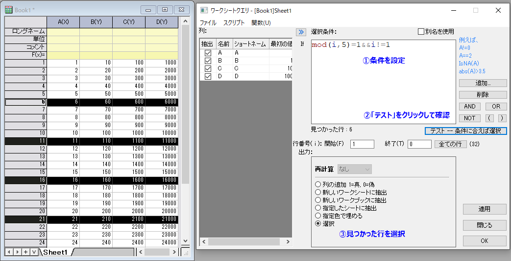
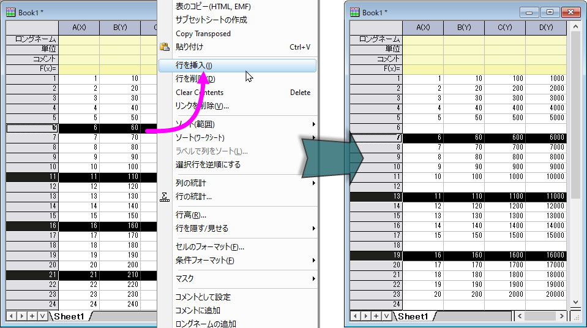
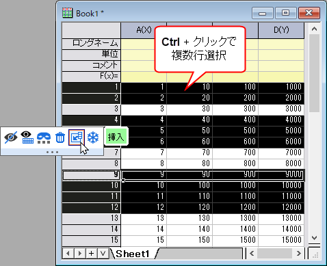

FAQ-1186 特定の行数ごとに1行挿入するにはどうすればよいですか?
Insert-Row-of-Every-N-Rows
最終更新日：2023/7/25
N行ごとに 1行を挿入するには、
- ワークシートをアクティブにして、メニューからワークシート: ワークシートクエリを選択します。
- 開いたワークシートクエリダイアログで、次の選択条件を入力します。
mod(i,N)=1&&i!=1
これでN行ごとに選択します。たとえば、5行ごとに1行を挿入する場合は、 mod(i,5)=1&&i!=1
のように選択条件編集ボックスに入力します。
- テスト--条件に合えば選択ボタンをクリックします。これにより、N行ごとに強調表示されます。
- 出力グループで、選択ラジオボタンを選択します。OKボタンをクリックしてワークシートクエリを閉じます。

- 選択された行のいずれかを右クリックして、ショートカットメニューから行を挿入を選択します。これにより、強調表示された各行の前に1行挿入されます。

 | - 同様の方法で、特定の列数ごとに1列を挿入することもできます。列の選択では、メニュー編集: 選択を使用できます。
- Ctrlキーを押しながらマウスを使用して不連続な行または列を選択し、ミニツールバーの挿入ボタンを使用して各選択の前に行または列を挿入することもできます。
- 
|
キーワード:行を挿入, 列を挿入, 等間隔に挿入, 等間隔に行を選択